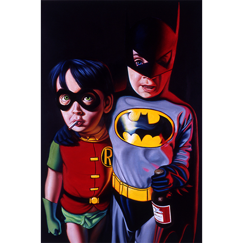

Literature
Ron English, Fauxlosophy: The Art of Ron English (San Francisco: Last Gasp, 2008), p. 156. ISBN 978-0867196566.
Ron English, Original Grin: The Art of Ron English (Paris: Cernunnos, 2019), p. 117. ISBN 978-2374950938.
Ron English, Son of Pop: Ron English Paints His Progeny (Cotati, CA: 9mm Books, 2007), p. 76. ISBN 978-0976632511.